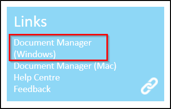
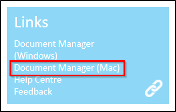
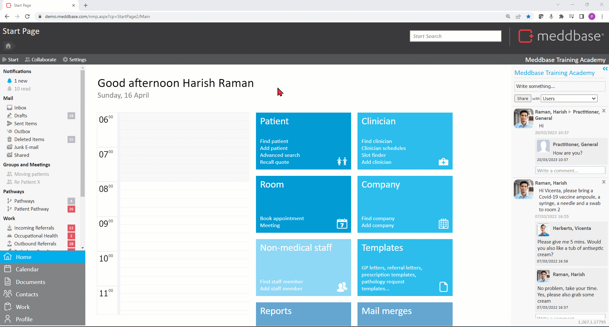

As well as allowing you to open and save files, the document manager also encrypts files stored temporarily on your computer and safely deletes from any temporary folder after you close them. This ensures that if unauthorised access were gained to your computer, your patient data will not be compromised. The Document Manager is a crucial tool for Meddbase to interact with your computer and as such its use is strongly advised for all users.
The following article is a step-by-step guide on how to install the Document Manager plug-in on your computer.

The default location for the Document Manager is ‘C:\Program Files (x86)\Medical Management Systems Ltd\Meddbase Document Manager’ for 64-bit operating systems. For those running older 32-bit systems, the installation path will be ‘C:\Program Files\Medical Management Systems Ltd\Meddbase Document Manager’.
Installing the new version of the Document Manager will automatically replace the old version installed on your computer.
If you are using an Apple Mac, you can download a Mac version of the Document Manager from the same Tile on your Meddbase Start Page.
Meddbases recommend the use of Document Manager for all Apple Mac users for an improved experience. Meddbase no longer updates WebDav since May 2023 and will be retiring it in the near future. If you have any queries about this please contact our Support Team.

Clicking the link downloads a .pkg file that will launch the installer when the user opens the file or automatically, depending on the Mac user preferences.
Meddbase gives users the option to configure document download options per-user or per-browser.
To do this:

There are 2 dropdown menus here:
The settings available for selection are:
Once you have selected your document downloading options, click Save to apply your settings.
There can be issues related to downloaded Meddbase files that are opening in another program that has been incorrectly configured with this set file type.
Click here for a detailed article that provides you with support if you are having issues with downloading documents via Document Manager to Microsoft Word.
Please find below a list of file types, available actions, functionality and other rules that apply when using the Document Manager. These apply to both Windows and Mac computers.
| File type/extension | Available actions/functionality |
| .docx |
|
.png |
|
| |
| .txt |
|
| .tiff |
|
| .meddbase |
*These files are deleted automatically as soon as they are downloaded |
| Other rules and functionality | |
| Meddbase user can | Meddbase user can not |
|
|
If you intend to work with (a) .meddbase document(s) for prolonged periods of time, please ensure your chamber has an appropriate timeout. This timeout is set as a number of seconds where you are not asked for login credentials when you open or save a .meddbase document. It is measured from the moment the document was downloaded. The setting can be accessed by navigating to Admin > Configuration > Application > File download 'No login' time (secs).